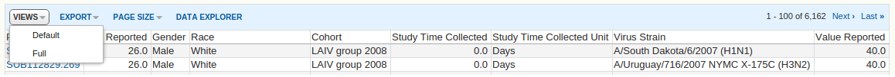

vignettes/getDataset.Rmd
getDataset.RmdThis vignette shows detailed examples for all functionalities of the getDataset method.
As explained into the introductory vignette, datasets must be downloaded from ImmuneSpaceConnection objects. We must first instantiate a connection to the study or studies of interest. Throughout this vignette, we will use two connections, one to a single study, and one to to all available data.
Now that the connections have been instantiated, we can start downloading from themm but we need to figure out which datasets are available within our chosen studies. Printing the connections will, among other information, list the datasets availables. The listDatasets method will display only the information we are looking for.
## datasets
## cohort_membership
## demographics
## elisa
## elispot
## fcs_analyzed_result
## fcs_sample_files
## gene_expression_files
## hai
## pcr
## Expression Matrices
## SDY269_PBMC_TIV_Geo
## SDY269_PBMC_LAIV_Geo## datasets
## cohort_membership
## demographics
## elisa
## elispot
## fcs_analyzed_result
## fcs_control_files
## fcs_sample_files
## gene_expression_files
## hai
## hla_typing
## mbaa
## neut_ab_titer
## pcr
## Expression Matrices
## SDY1325_WholeBlood_LowIntraMuscularPS_geo
## SDY1294_PBMC_ChineseCohort_Geo
## SDY1119_PBMC_oldHealthy_Geo
## SDY1119_PBMC_oldT2D_Geo
## SDY1119_PBMC_youngT2D_Geo
## SDY1119_PBMC_youngHealthy_Geo
## SDY1289_WholeBlood_MontrealCohort_Geo
## SDY1289_WholeBlood_LausanneCohort_Geo
## SDY1324_PBMC_nonBCGvacc
## SDY1324_PBMC_LatentTB
## SDY1324_PBMC_BCGvacc
## SDY89_WholeBlood_EnergixB
## SDY1370_Bcell_lc16m8_geo
## SDY1370_Bcell_dryvax_geo
## SDY1370_Tcell_lc16m8_geo
## SDY1370_Tcell_dryvax_geo
## SDY1370_PBMC_lc16m8_geo
## SDY1370_PBMC_dryvax_geo
## SDY1368_WholeBlood_Twin_Geo
## SDY1368_WholeBlood_NonTwin_Geo
## SDY67_PBMC_HealthyAdults
## SDY1328_WholeBlood_HealthyAdults_geo
## SDY224_PBMC_TIV2010_ImmPort
## SDY888_PBMC_UninfectedEndemicArea_Geo
## SDY888_PBMC_UninfectedNonEndemicArea_Geo
## SDY888_PBMC_InfectedEndemicArea_Geo
## SDY28_PBMC_Dryvax
## SDY34_PBMC_TIV
## SDY34_PBMC_Controls
## SDY305_Other_IDTIV_Geo
## SDY305_Other_TIV_Geo
## SDY112_Other_GroupC
## SDY112_Other_GroupB
## SDY112_Other_GroupA
## SDY315_Other_GroupC_Geo
## SDY315_Other_GroupB_Geo
## SDY315_Other_GroupA_Geo
## SDY406_Other_ILI_Geo
## SDY113_Other_IDTIV_Geo
## SDY113_Other_LAIV_Geo
## SDY113_Other_TIV_Geo
## SDY144_Other_TIV_Geo
## SDY690_PBMC_Energixb
## SDY690_WholeBlood_Energixb
## SDY597_Other_InVitro
## SDY522_Other_LAIV
## SDY387_WholeBlood_NCH2010
## SDY372_WholeBlood_JDM2012
## SDY368_WholeBlood_NCH2013
## SDY364_WholeBlood_NCH2012
## SDY312_Other_GroupC
## SDY312_Other_GroupB
## SDY312_Other_GroupA
## SDY301_Other_AIRFV
## SDY299_Other_HEPISLAV
## SDY296_WholeBlood_AIRFV
## SDY667_WholeBlood_PSORPPP
## SDY212_WholeBlood_Older_Geo
## SDY212_WholeBlood_Young_Geo
## SDY212_PBMC_Older_Geo
## SDY212_PBMC_Young_geo
## SDY270_PBMC_TIVGroup_Geo
## SDY1373_WholeBlood_highDose_Geo
## SDY1373_WholeBlood_lowDose_Geo
## SDY1364_PBMC_IntraDermal_Geo
## SDY1364_PBMC_IntraMuscular_Geo
## SDY1325_WholeBlood_IntramuscularCRM_Geo
## SDY1325_WholeBlood_IntramuscularPS_Geo
## SDY1325_WholeBlood_SubcutaneousPS_Geo
## SDY1291_PBMC_HealthyHIVUninfected_Geo
## SDY80_Other_Cohort2_Geo
## SDY1293_PBMC_Vaccinated_geo
## SDY1293_PBMC_Control_Geo
## SDY1276_WholeBlood_Validation_Geo
## SDY1276_WholeBlood_Discovery_Geo
## SDY1264_PBMC_Trial2_Geo
## SDY1264_PBMC_Trial1_Geo
## SDY1260_PBMC_MCV4_Geo
## SDY1260_PBMC_MPSV4_Geo
## SDY984_PBMC_Elderly_Geo
## SDY984_PBMC_Young_Geo
## SDY61_PBMC_TIVGrp
## SDY56_PBMC_Older
## SDY56_PBMC_Young
## SDY80_PBMC_Cohort2_Geo
## SDY63_PBMC_Young_Geo
## SDY63_PBMC_Older_Geo
## SDY404_PBMC_Young_Geo
## SDY404_PBMC_Older_Geo
## SDY400_PBMC_Older_Geo
## SDY400_PBMC_Young_Geo
## SDY269_PBMC_TIV_Geo
## SDY269_PBMC_LAIV_Geo
## SDY180_Other_Grp2Saline_Geo
## SDY180_Other_Grp2Pneunomax23_Geo
## SDY180_Other_Grp2Fluzone_Geo
## SDY180_Other_Grp1Saline_Geo
## SDY180_Other_Grp1Pneunomax23_Geo
## SDY180_Other_Grp1Fluzone_Geo
## SDY300_dendriticCell_dcMonoFlu2011
## SDY300_otherCell_dcMonoFlu2011
## SDY67_Batch2_HealthyAdult
## SDY162_Macrophage_VLplus
## SDY162_PBMC_VLplus
## SDY162_Macrophage_VLminus
## SDY162_PBMC_VLminusNaturally, all contains every dataset available on ImmuneSpace as it combines all available studies. Additionaly, when creating connection object with verbose = TRUE, a call to the getDataset method with an invalid dataset name will return the list of valid datasets.
Calling getDataset returns a selected dataset as it is displayed on ImmuneSpace.
## participant_id age_reported gender race cohort
## 1: SUB112829.269 26 Male White LAIV group 2008
## 2: SUB112829.269 26 Male White LAIV group 2008
## 3: SUB112829.269 26 Male White LAIV group 2008
## 4: SUB112829.269 26 Male White LAIV group 2008
## 5: SUB112829.269 26 Male White LAIV group 2008
## 6: SUB112829.269 26 Male White LAIV group 2008
## study_time_collected study_time_collected_unit virus
## 1: 0 Days A/South Dakota/06/2007
## 2: 0 Days A/Uruguay/716/2007
## 3: 0 Days B/Florida/4/2006
## 4: 28 Days A/South Dakota/06/2007
## 5: 28 Days A/Uruguay/716/2007
## 6: 28 Days B/Florida/4/2006
## value_preferred
## 1: 40
## 2: 40
## 3: 20
## 4: 40
## 5: 40
## 6: 40Because some datasets such as flow cytometry results can contain a large number of rows, the method returns data.table objects to improve performance. This is especially important with multi-study connections.
The datasets can be filtered before download. Filters should be created using Rlabkey’s makeFilter function.
Each filter is composed of three part: * A column name or column label * An operator * A value or array of values separated by a semi-colon
## Loading required package: httr## Loading required package: jsonlite# Get participants under age of 30
young_filter <- makeFilter(c("age_reported", "LESS_THAN", 30))
# Get a specific list of two participants
pid_filter <- makeFilter(c("participantid", "IN", "SUB112841.269;SUB112834.269"))For a list of available operators, see ?Rlabkey::makeFilter.
# HAI data for participants of study SDY269 under age of 30
hai_young <- sdy269$getDataset("hai", colFilter = young_filter)
# List of participants under age 30
demo_young <- all$getDataset("demographics", colFilter = young_filter)
# ELISPOT assay results for two participants
mbaa_pid2 <- all$getDataset("elispot", colFilter = pid_filter)Note that filtering is done before download. When performance is a concern, it is faster to do the filtering via the colfFilter argument than on the returned table.
Any dataset grid on ImmuneSpace offers the possibility to switch views between ‘Default’ and ‘Full’. The Default view contains information that is directly relevant to the user. Sample description and results are joined with basic demographic. However, this is not the way data is organized in the database. The ‘Full’ view is a representation of the data as it is stored on ImmPort. The accession columns are used under the hood for join operations. They will be useful to developers and user writing reports to be displayed in ImmuneSpace studies.

Screen capture of the button bar of a dataset grid on ImmuneSpace.
The original_view argument decides which view is downloaded. If set to TRUE, the ‘Full’ view is returned.
## [1] "participant_id" "arm_accession"
## [3] "biosample_accession" "expsample_accession"
## [5] "experiment_accession" "study_accession"
## [7] "study_time_collected" "study_time_collected_unit"
## [9] "virus" "value_reported"
## [11] "value_preferred" "unit_reported"
## [13] "unit_preferred"For additional information, refer to the ‘Working with tabular data’ video tutorial.
As explained in the introductory guide, the ImmuneSpaceConnection class is a R6 class. It means its objects have fields accessed by reference. As a consequence, they can be modified without making a copy of the entire object. ImmuneSpaceR uses this feature to store downloaded datasets and expression matrices. Subsequent calls to getDataset with the same input will be faster.
See ?R6::R6Class for more information about R6 class system.
We can see the data currently cached using the cache field. This is not intended to be used for data manipulation and only displayed here to explain what gets cached.
## [1] "GE_matrices" "a686d76d73f361f98814f8a71771a3b4"
## [3] "b1fc871b0317b0835fcd962f804ca1e8" "eca5f7a1d74ad1de545fd45b773f8f68"
## [5] "0518ce2a79b128c0fdf56d816576dd9c"Different views are saved separately.
## [1] "GE_matrices" "a686d76d73f361f98814f8a71771a3b4"
## [3] "b1fc871b0317b0835fcd962f804ca1e8" "eca5f7a1d74ad1de545fd45b773f8f68"
## [5] "0518ce2a79b128c0fdf56d816576dd9c" "ef3cb0b3940dde6bf773a36e93651cc4"Because of the infinite number of filters and combinations of filters, we do not cache filtered datasets.
If, for any reason, a specific dataset needs to be redownloaded, the reload argument will clear the cache for that specific getDataset call and download the table again.
Finally, it is possible to clear every cached dataset (and expression matrix).
## [1] "GE_matrices"Again, the cache field should never be modified manually. When in doubt, simply reload the dataset.
## R version 3.6.0 (2019-04-26)
## Platform: x86_64-pc-linux-gnu (64-bit)
## Running under: Ubuntu 18.04.2 LTS
##
## Matrix products: default
## BLAS: /usr/lib/x86_64-linux-gnu/blas/libblas.so.3.7.1
## LAPACK: /usr/lib/x86_64-linux-gnu/lapack/liblapack.so.3.7.1
##
## locale:
## [1] LC_CTYPE=en_US.UTF-8 LC_NUMERIC=C
## [3] LC_TIME=en_US.UTF-8 LC_COLLATE=en_US.UTF-8
## [5] LC_MONETARY=en_US.UTF-8 LC_MESSAGES=en_US.UTF-8
## [7] LC_PAPER=en_US.UTF-8 LC_NAME=C
## [9] LC_ADDRESS=C LC_TELEPHONE=C
## [11] LC_MEASUREMENT=en_US.UTF-8 LC_IDENTIFICATION=C
##
## attached base packages:
## [1] stats graphics grDevices utils datasets methods base
##
## other attached packages:
## [1] Rlabkey_2.3.0 jsonlite_1.6 httr_1.4.0
## [4] ImmuneSpaceR_1.13.1 knitr_1.23
##
## loaded via a namespace (and not attached):
## [1] ncdfFlow_2.30.1 bitops_1.0-6 matrixStats_0.54.0
## [4] fs_1.3.1 webshot_0.5.1 RColorBrewer_1.1-2
## [7] rprojroot_1.3-2 Rgraphviz_2.28.0 tools_3.6.0
## [10] backports_1.1.4 R6_2.4.0 KernSmooth_2.23-15
## [13] lazyeval_0.2.2 BiocGenerics_0.30.0 colorspace_1.4-1
## [16] flowWorkspace_3.32.0 tidyselect_0.2.5 gridExtra_2.3
## [19] curl_3.3 compiler_3.6.0 preprocessCore_1.46.0
## [22] graph_1.62.0 Biobase_2.44.0 TSP_1.1-7
## [25] xml2_1.2.0 desc_1.2.0 plotly_4.9.0
## [28] caTools_1.17.1.2 scales_1.0.0 DEoptimR_1.0-8
## [31] hexbin_1.27.3 mvtnorm_1.0-11 robustbase_0.93-5
## [34] pkgdown_1.3.0 commonmark_1.7 stringr_1.4.0
## [37] digest_0.6.20 rmarkdown_1.13 rrcov_1.4-7
## [40] pkgconfig_2.0.2 htmltools_0.3.6 htmlwidgets_1.3
## [43] rlang_0.4.0 rstudioapi_0.10 flowCore_1.50.0
## [46] gtools_3.8.1 dendextend_1.12.0 dplyr_0.8.3
## [49] magrittr_1.5 Rcpp_1.0.1 munsell_0.5.0
## [52] viridis_0.5.1 stringi_1.4.3 yaml_2.2.0
## [55] MASS_7.3-51.4 zlibbioc_1.30.0 gplots_3.0.1.1
## [58] grid_3.6.0 parallel_3.6.0 gdata_2.18.0
## [61] crayon_1.3.4 lattice_0.20-38 pillar_1.4.2
## [64] corpcor_1.6.9 codetools_0.2-16 stats4_3.6.0
## [67] glue_1.3.1 gclus_1.3.2 evaluate_0.14
## [70] latticeExtra_0.6-28 data.table_1.12.2 RcppParallel_4.4.3
## [73] foreach_1.4.4 gtable_0.3.0 purrr_0.3.2
## [76] tidyr_0.8.3 heatmaply_0.16.0 assertthat_0.2.1
## [79] ggplot2_3.2.0 xfun_0.8 roxygen2_6.1.1
## [82] IDPmisc_1.1.19 pcaPP_1.9-73 viridisLite_0.3.0
## [85] seriation_1.2-7 tibble_2.1.3 pheatmap_1.0.12
## [88] iterators_1.0.10 registry_0.5-1 memoise_1.1.0
## [91] flowViz_1.48.0 cluster_2.0.8